Unit 10 Family Guide: Florida Ecosystems
Opti's Wonder Films · Lessons 29.01 to 31.02 · Weeks 29 to 31

What Makes the Everglades Special?
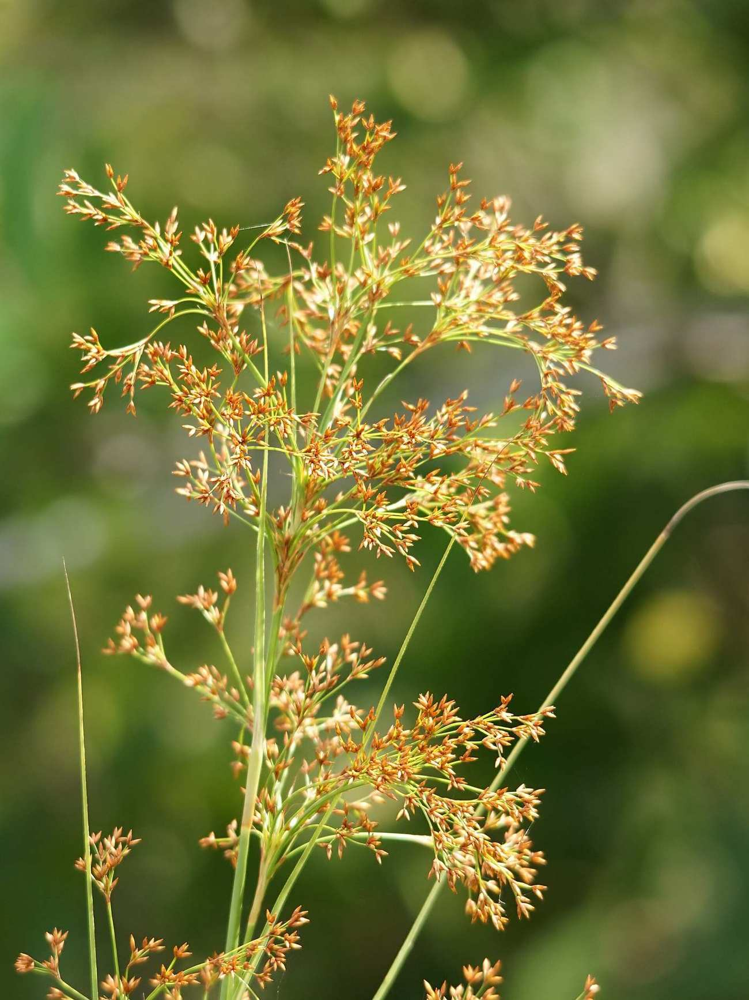
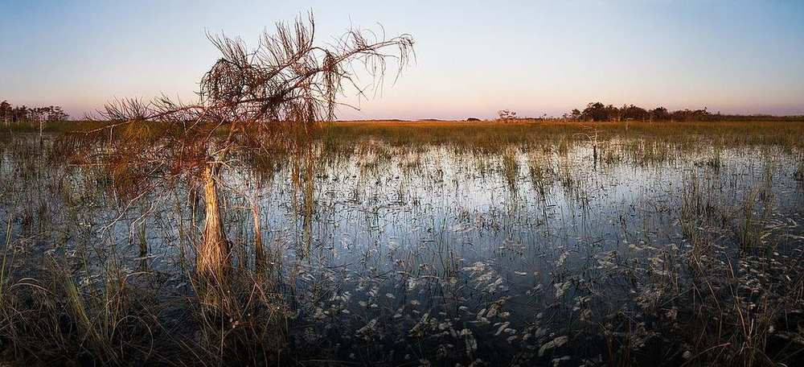
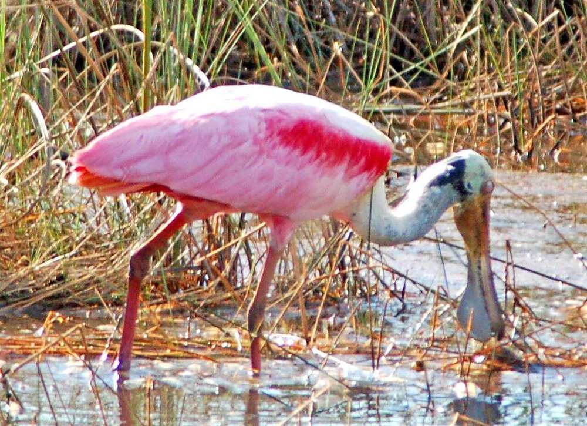
The film's big questionWhy can some animals thrive in the Everglades while others cannot survive there at all?
What your child learns
- The Everglades is a warm, wet, flat wetland, a slow "river of grass" that flows south toward the sea.
- Animals that fit warm, shallow water, like alligators, herons and spoonbills, thrive there. Animals that need dry ground or freezing cold, like a polar bear, could not survive.
- In the wet season the water rises. In the dry season it shrinks, fish crowd into the last pools, and wading birds feast and raise their chicks.
- The marsh soaks up storm rain like a giant sponge, which helps slow floods.
Real specimens they studied
Real sawgrass, an alligator and a polar bear (the Fit Test), a walk from a tree island through sawgrass and a slough to the mangrove coast, and alligators and crocodiles side by side.
Words
- wetland
- sawgrass
- habitat
- ecosystem
- season
- adapted
Ask at dinner
"Why couldn't a polar bear live in the Everglades?" (Listen for: it is too warm and wet, and a polar bear is adapted to ice and cold.)
Try at home
Pour a cup of water onto a dry sponge and onto a plate. Which one holds the water? Talk about how the Everglades soaks up rain.
Investigation: Everglades Food Web
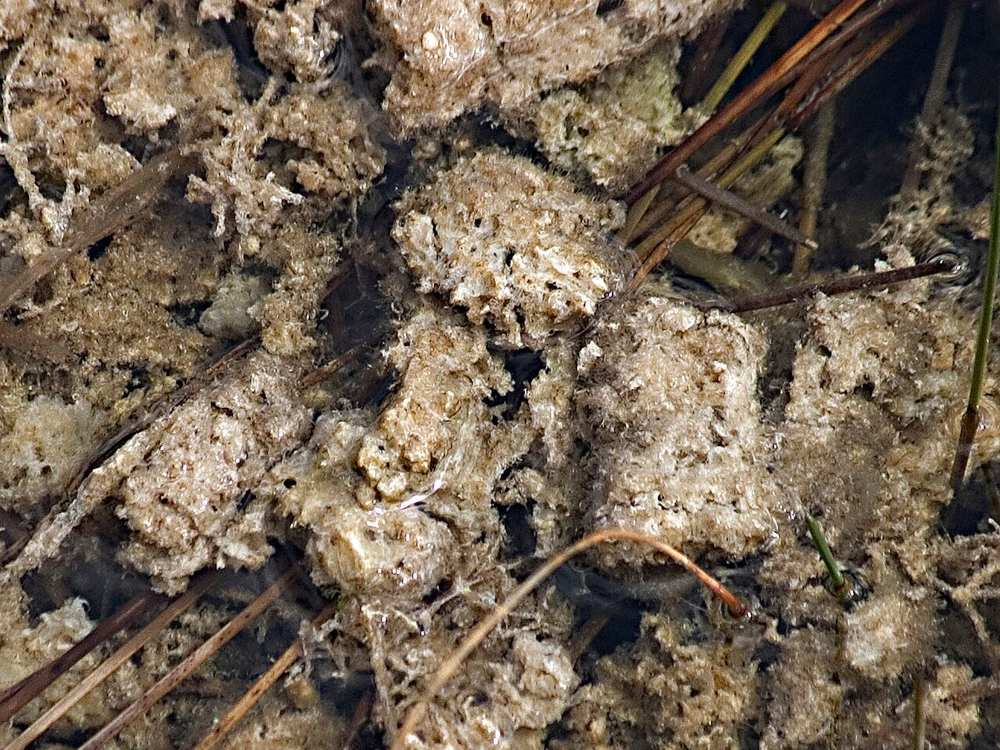
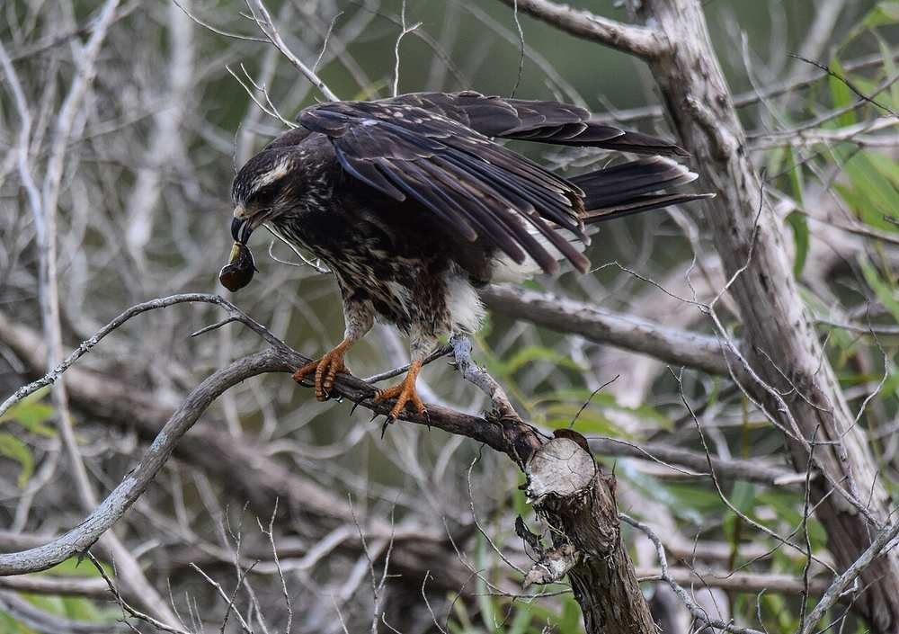

The film's big questionIf one animal disappeared from the Everglades, what would happen to everything else?
What your child learns
- A food web shows who eats whom. Energy starts with the Sun.
- Producers, like sawgrass and periphyton (a living mat of tiny algae), make their own food from sunlight, water and air.
- Consumers eat other living things, from apple snails all the way up to the top predator, the alligator. Decomposers break down dead things and return nutrients.
- Scientists use a food web as a model to predict what happens if one species disappears. The snail kite eats almost only apple snails, so it depends on them.
Real specimens they studied
A real mat of periphyton, periphyton and an apple snail (the Make-Your-Own-Food Test), a climb from the top predator down to the producers, and the snail kite's comeback.
Words
- food web
- producer
- consumer
- predator
- prey
- decomposer
Ask at dinner
"Where does the energy in a food web start?" (Listen for: with the Sun; plants and algae use sunlight to make food.)
Try at home
Pick something from dinner and trace it back to the Sun together (chicken eats corn, corn grows in sunlight).
How Are Florida Animals Adapted?

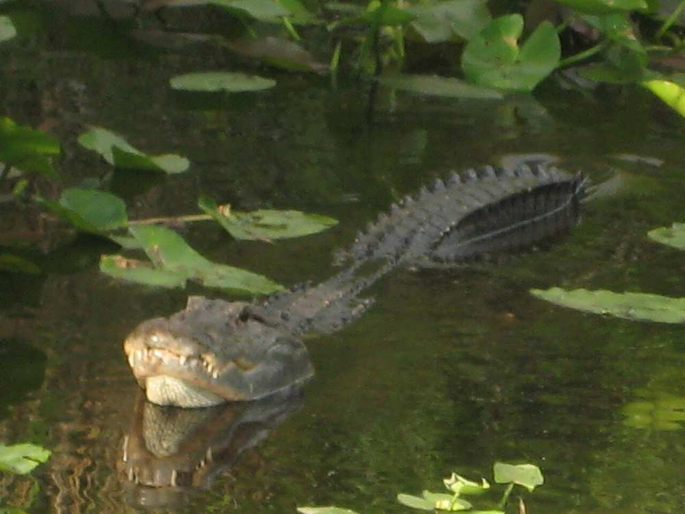
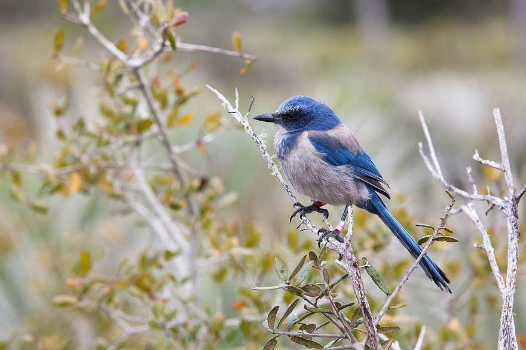
The film's big questionHow do Florida animals survive in such a wild, watery world?
What your child learns
- An adaptation is a body part or behavior, passed down from parents, that helps an animal survive. An animal can't grow a new one just because it needs it.
- An alligator's eyes and nostrils sit on top of its head, so it can hide underwater and still see and breathe.
- Camouflage helps prey hide and helps predators sneak up. Some animals, like manatees, survive winter by moving to warm springs.
- Scientists sort animals into groups: mammals, birds, reptiles, amphibians and fish are all vertebrates, animals with a backbone.
Real specimens they studied
A real alligator skull, a green tree frog and a scrub lizard (the Hide Test), a cabinet with one drawer for each animal group, and the scrub-jay that lives nowhere else on Earth.
Words
- adaptation
- camouflage
- habitat
- trait
- predator
- prey
Ask at dinner
"How does an alligator hide and still breathe?" (Listen for: its eyes and nostrils are on top of its head, so only they stick out of the water.)
Try at home
Hide a green toy on a green towel and a brown toy on a brown one. Which is easier to spot on the wrong color?
Investigation: Adaptation Comparison
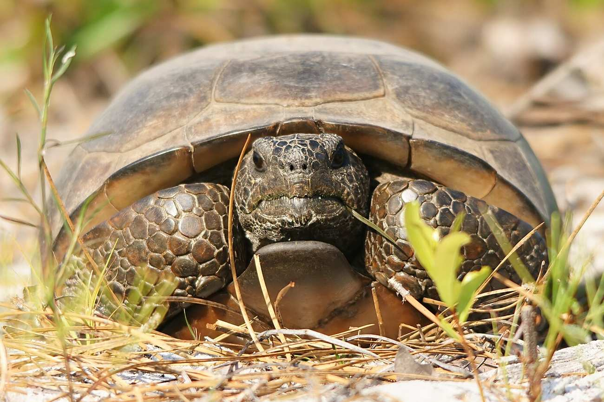
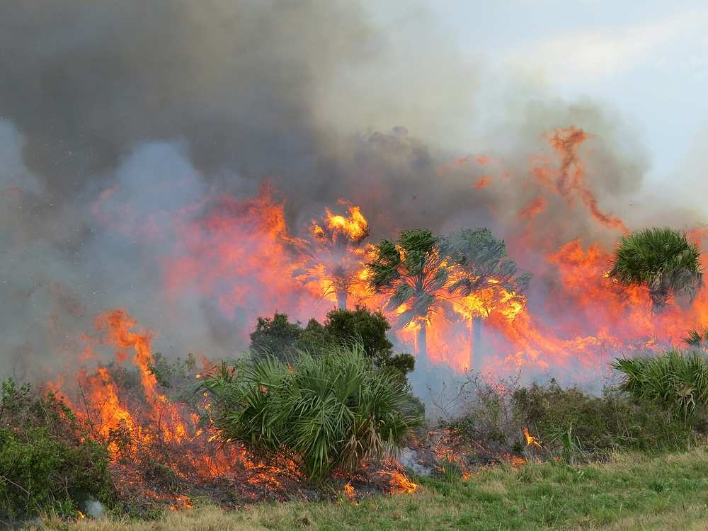
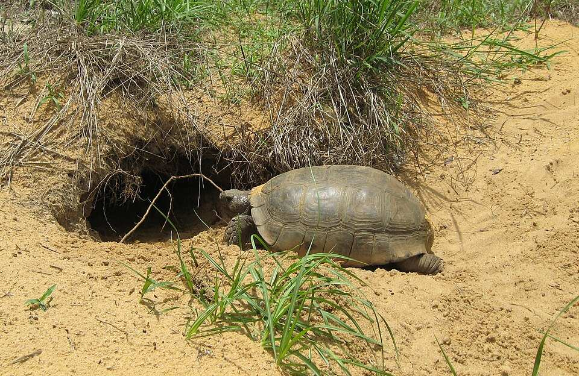
The film's big questionCould a small difference between two animals of the same kind change which one survives?
What your child learns
- Animals of the same kind are not all identical. These small differences are called variations.
- Most variations don't matter much, but some give an individual a survival advantage. A pale beach mouse is harder for an owl to see on white sand.
- Survivors have young, and the young can inherit the helpful characteristic. Scientists think this is how a population changes over many generations.
- A gopher tortoise burrow stays cool during fires, and more than 350 kinds of animals have been found using these burrows.
Real specimens they studied
A gopher tortoise's shovel-like front legs, pale and darker mice of the same species (the Owl Test), a cutaway of a tortoise burrow and its guests, and five variation files from white alligators to Key deer.
Words
- variation
- survival advantage
- population
- individual
- characteristic
- behavior
Ask at dinner
"Is every difference between two animals helpful?" (Listen for: no; only some differences help, like pale fur on white sand.)
Try at home
Look at family members' hands or the leaves on one tree. Find differences between individuals of the same kind.
What Threatens Florida Ecosystems?
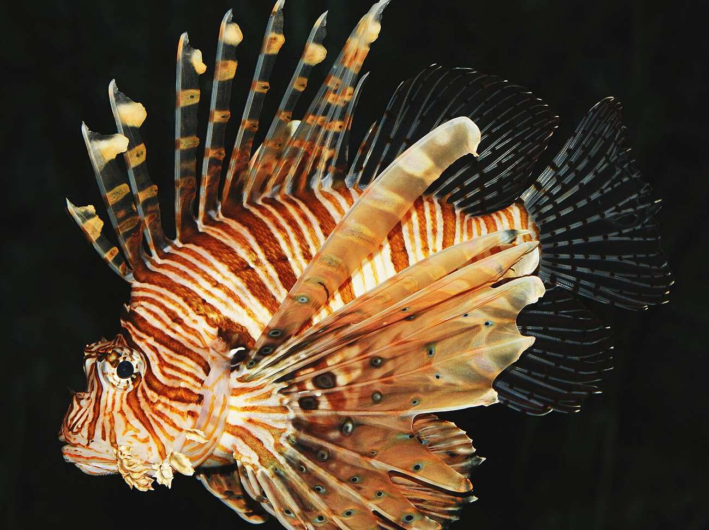
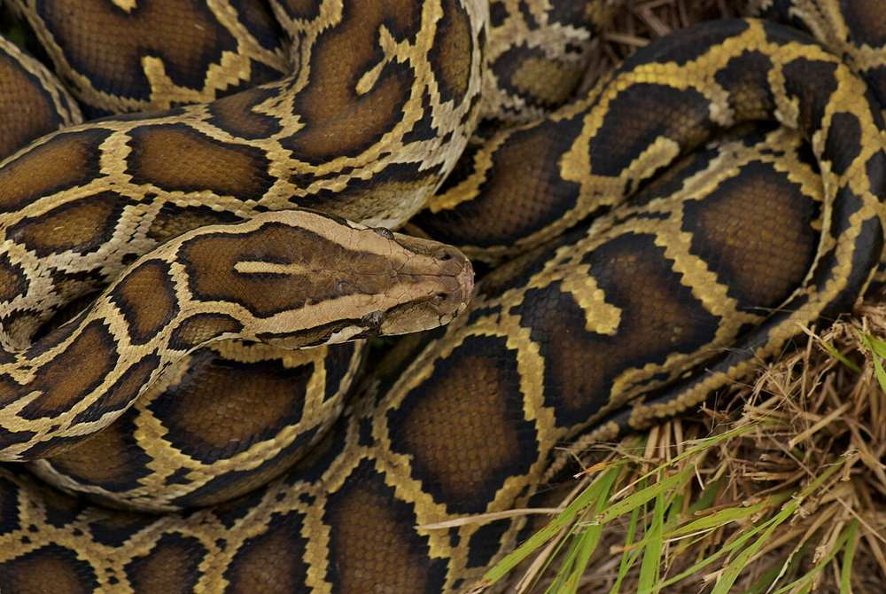

The film's big questionWhat is threatening Florida's wild places, and what can people do about it?
What your child learns
- Three big threats harm Florida's ecosystems: pollution, invasive species and habitat loss.
- Rain washes fertilizer into lakes (runoff). Algae grows out of control, blocking sunlight and using up the oxygen fish need.
- Invasive species, like Burmese pythons and lionfish, came from far away and spread. Where pythons spread, scientists counted far fewer raccoons and rabbits.
- People caused many of these problems, and people are also fixing them: filter marshes, removing invaders and protecting land.
Real specimens they studied
A lionfish, a lawn and a farm field with and without a strip of native plants (the Buffer Test), a road trip across South Florida's threats, and five threat files with their fixes.
Words
- ecosystem
- pollution
- invasive species
- habitat loss
- runoff
- conservation
Ask at dinner
"Can pollution be something you can't see?" (Listen for: yes; fertilizer in rainwater is invisible but turns lakes green.)
Try at home
Walk around your yard or neighborhood after rain. Where does the water go? Look for plants that slow it down.
Engineering Challenge: Protect Florida Habitats
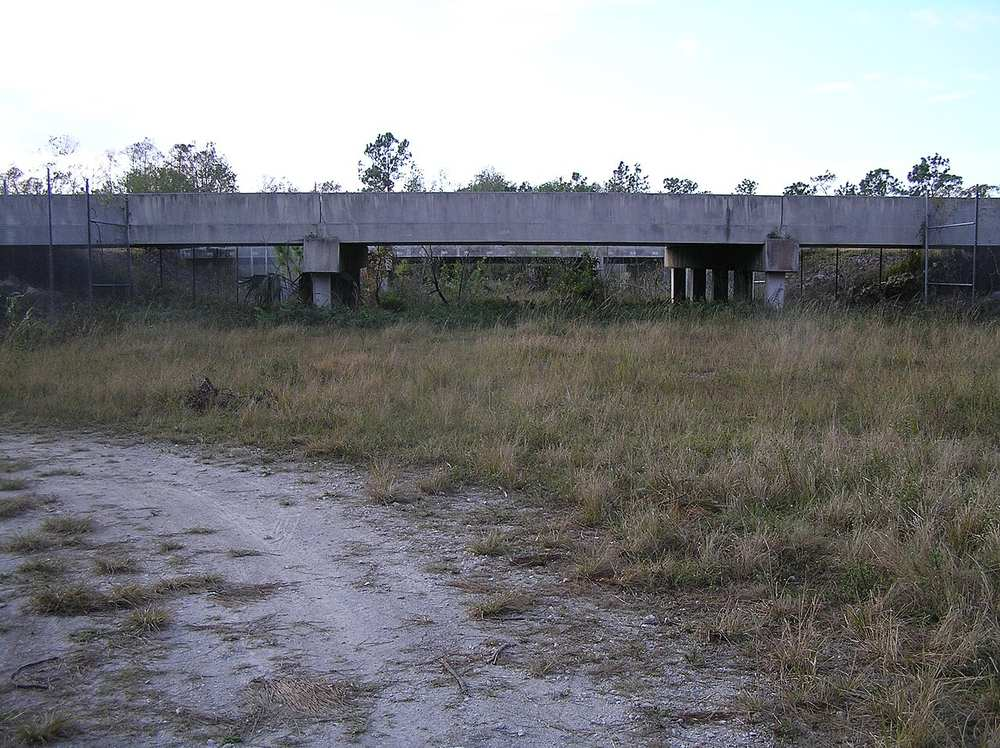
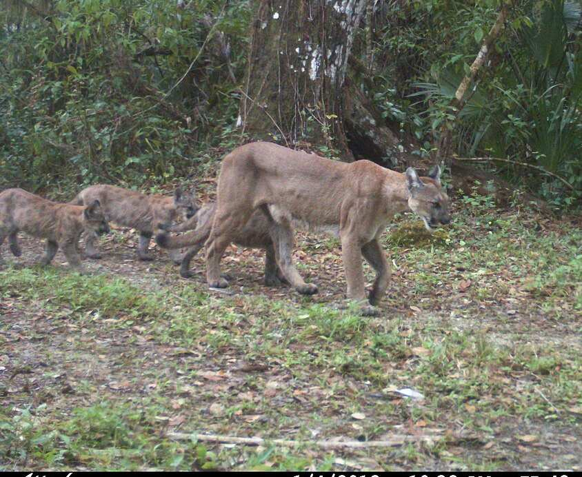

The film's big questionIf you were an engineer hired to fix one of Florida's habitat problems, what would you build, and how would you know if it worked?
What your child learns
- Engineers follow a design process: define the problem, research, design, test and improve.
- Criteria are what a design must do. Constraints are its limits, like cost, size or materials.
- In the early 1990s, engineers built 24 wildlife crossings and changed 12 bridges along I-75, with fences that guide panthers under the highway.
- Testing gives evidence. When a design doesn't work, engineers improve it; they don't give up.
Real specimens they studied
Brazilian pepper berries, a small pipe and a wide bridge tried with a panther and a turtle (the Tunnel Test), four real Florida fixes, and five design files that show which projects worked and which needed improving.
Words
- criteria
- constraint
- prototype
- habitat corridor
- restoration
- engineer
Ask at dinner
"Why can't one tunnel work for every animal?" (Listen for: different animals need different things; a panther needs a wide, bright crossing, a turtle fits a small tunnel.)
Try at home
Build a bridge for a toy car from paper and tape. Criteria: it holds the car. Constraint: only 5 sheets of paper. Test it, then improve it.
Photo credits
- Sawgrass, the Everglades' famous plant (29.01): Hans Hillewaert, CC BY-SA 3.0.
- The River of Grass, Everglades National Park (29.01): Everglades NPS from Homestead, Florida, United States, Public domain.
- A roseate spoonbill, Everglades National Park (29.01): Everglades NPS from Homestead, Florida, United States, Public domain.
- Periphyton, the Everglades' food mat (29.02): Everglades NPS from Homestead, Florida, United States, Public domain.
- A snail kite, Tosohatchee, Florida (29.02): Sirkfish, CC BY-SA 4.0.
- A snail kite at Lake Okeechobee (29.02): FlightEditor, CC BY-SA 4.0.
- A real alligator skull (30.01): Didier Descouens, CC BY-SA 4.0.
- An alligator near the Anhinga Trail (30.01): Everglades NPS from Homestead, Florida, United States, Public domain.
- A Florida scrub-jay, found only in Florida (30.01): Ben Smegelsky, Public domain.
- A gopher tortoise (30.02): Hans Hillewaert, CC BY-SA 4.0.
- A planned burn at Merritt Island (30.02): U.S. Fish and Wildlife Service Southeast Region, Public domain.
- A gopher tortoise at its burrow (30.02): Gary2863 at English Wikipedia, Public domain.
- A lionfish, an invader on Florida reefs (31.01): Michael Gäbler, CC BY 3.0.
- A Burmese python in the Everglades (31.01): Bryan Falk, USGS. Public domain., Public domain.
- Algae on Lake Okeechobee, seen by NASA in 2016 (31.01): NASA Earth Observatory images by Joshua Stevens, using Landsat data from the U.S. Geological Survey. Caption by Kathryn Hansen., Public domain.
- A wildlife underpass under a Florida highway (31.02): John D. Lloyd, CC BY 2.5.
- A panther family, Florida Panther National Wildlife Refuge (31.02): USFWS/Southeast, Public domain.
- Wading birds on the restored Kissimmee River (31.02): JaxStrong, CC BY 2.0.
- Opti the owl: Optima Academy.